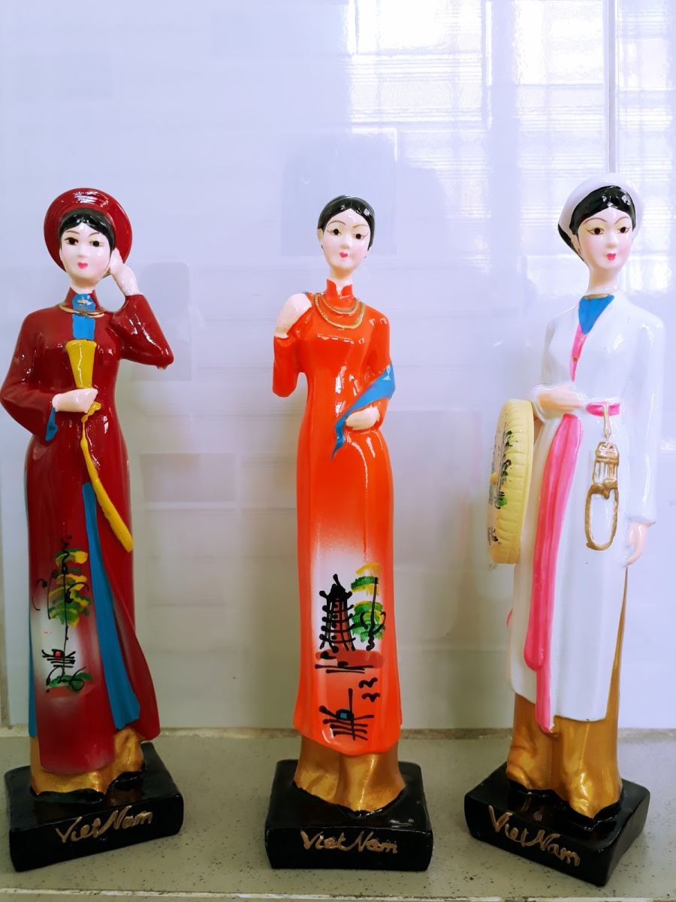

Nói tới con số 40 năm cho một đời người, thì còn không mau ăn gian thêm mười năm nữa để ta đây. Khoe là tui sống nửa đời người cho có vẻ chững chạc hè. Nghĩ tới đây thì nhớ con nhỏ bạn Bắc Kỳ thời trung học. Có một hôm tôi thật thà nói với nó:
- Ê nhỏ có người hỏi tuổi của tau, tau ăn gian lui ba tuổi mi thấy sao?.
Nhỏ nghe xong thì shi` một cái rồi trả lời:
- Đã ăn gian sao không chơi luôn mười tuổi cho đã.
Tôi á lên một tiếng mới thấy mình khờ thiệt, nếu như đang đối diện với nhỏ, tôi sẽ thấy trong đôi mắt của nó đầy sự tinh nghịch, và trên miệng cười thì đầy sự thú vị, mà tôi vẫn hình dung ra hình dáng con nhỏ. Khi hai đứa còn đang đi học,chung trường chung lớp.
Tôi nhớ ngày tựu trường năm xưa. Chúng tôi gặp nhau trong tà áo dài trắng, vẫn còn nhìn nhau xa lạ. Nhưng rồi như một cái duyên, khi được xếp chỗ ngồi thì lại ngồi kế bên nhau. Một bàn dài có bốn chỗ, nhưng vì đây là trương tư, trường dành cho những cô cậu học sinh mà theo tôi nhận xét là có vẻ học tà tà hơn là chăm chỉ ngồi dồi mài kinh sử. Học sinh tới ghi danh không đông lắm nên cái bàn bốn người, chỉ có ba chúng tôi. Ba đứa ba miền, nhỏ Bắc Kỳ dân 54, thời bố mẹ theo tàu há mồm để vào miền Nam và nhỏ chào đờI tại Đà Lạt. Miền Nam là quê hương của con nhỏ Nam Kỳ. Gia đình nhỏ này quê ở Bình Dương nhưng lên Sài Gòn mần ăn. Còn tôi là dân chính hiệu của miền Trung thương nhớ, mà trong mấy ca khúc thường nói về cái xứ quê nghèo mưa nắng hai mùa, đất cày lên sỏi đá. Quê nhà tôi ở tận Quảng Trị xa xôi. Con cái ra đời như trái cây trúng mùa. Nên ba tôi ổng phải làm một cuộc phiêu lưu, để thay đổi cuộc sống khá hơn cho tương lai con cháu sau này. Ông chọn Sài Gòn lúc bấy giờ được mệnh danh là hòn ngọc Viễn Đông làm nơi ghé chân, ý quên làm nơi đóng đô,cũng như đóng đinh lên mảnh đất mà lúc ở quê nhà. Chúng tôi thường hay nghe trong Radio bài hát thiệt hết sức lôi cuốn, hết sức khiêu gợi là... Sài Gòn đẹp lắm...Sài Gòn ơi... Sài Gòn ơi....

.Vậy là do trời xui khiến nên ba đứa tôi, một sớm một chiều thân nhau như bạn bè biết nhau từ trong tiền kiếp. Nói thiệt lòng lúc đầu nhỏ Bắc Kỳ nó chẳng ưa gì tôi, bị tôi đi học lúc nào cũng như đi dạo mùa xuân. Tới trường có tài xế đưa rước bằng xe hơi, chân đi giày cao gót chứ không đi guốc mộc. Vô lớp thì chỉ ngồi tính chuyện chút nữa giờ ra chơi đi ăn món gì cho ngon với con nhỏ Nam Kỳ. Sau khi quen rồi tôi mới biết nhỏ Nam Kỳ nhà cùng nơi vùng mình cư ngụ. Vậy là coi như láng giềng gần xịt.
Được vài tháng sau, chúng tôi cảm thấy thân nhau hơn. Nhỏ Bắc Kỳ không sợ mất lòng ai,nói thẳng như mũi tên:
- Tao cứ thấy hai đứa tụi bây đi chơi chứ đi học nổi gì.
Bạn thân mà "chửi" nhau còn được nữa, huống chi mấy câu nói có nhằm nhò gì đâu. Nhưng quả thật đúng như câu " Gần mực thì đen... ", nhỏ Bắc Kỳ gần tôi một hồi cũng bị lây cái tính ham chơi. Còn nhỏ Nam Kỳ gia đình rất nghèo. Hằng ngày sau giờ học còn phải phụ mẹ buôn bán trong chợ. Nên khi có con bạn đi chơi đâu nó cũng ra tay đài thọ hết. Vậy còn không mau nhập bọn đi cho biết đó biết đây.
Thế là tôi đầu tiêu cho biết bao cuộc vui suốt cả một thời hoa mộng. Nào là trốn học đi xem phim, rủ nhau dạo phố Sài Gòn, đi tắm hồ bơi, đi ăn quà vặt và sau cuối là đi nhảy đầm. Nói đi vũ trường nhảy đầm, chứ hai nhỏ Bắc và Nam chỉ ngồi uống nước và ngó thiên hạ dập dìu mà thôi. Tôi nghĩ trong đời ai cũng có một thời để nhớ và để yêu thương. Chúng tôi cứ thế và đã bên nhau suốt cả thời gian cặp sách tới trường.
Thì bỗng đâu có một ngày. Nhỏ Nam Kỳ nghỉ học tuyên bố lấy chồng. Người chồng là cấp bậc sĩ quan trong quân đội Việt Nam Cộng Hòa, nhưng anh đã bị thương và được giải ngũ. Quê anh ở tận Quảng Nam xa xôi, anh mang thương tật nên không muốn về lại quê nhà. Anh sống cô đơn và cũng khá lớn tuổi, nhưng anh đâu có ngờ là con nhỏ Nam Kỳ thua anh hơn cả chục tuổi, đã âm thầm yêu anh tự lúc nào cũng không hay. Anh thấy con nhỏ tuy con nhà nghèo nhưng ngoan, và cũng thơ văn lai láng thua ai. Anh động lòng với những bài thơ tình lãng mạn của nhỏ,nên chịu cùng con nhỏ tính chuyện trăm năm. Anh cũng chẳng giàu có gì nên trong ngày cưới nhỏ mặc áo dài trắng nữ sinh, trên ngực cài một cành hoa tím. Từ khi con nhỏ Nam Kỳ theo chồng bỏ cuộc vui, thì chỉ còn tôi với nhỏ Bắc Kỳ tung tăng ríu rít bên nhau …
Cho tới khi đất nước đã không còn những ngày yên bình, trong lớp học đã thưa dần số học sinh từ ở những tỉnh lẻ lên Sài Gòn trọ học. Các bạn đã quay về nhà để cha mẹ khỏi lo lắng khi có những biến cố xảy ra.
. Sài Gòn bắt đầu bất an với những vụ khủng bố gây nên sự chết chóc khắp nơi, thành phố trở thành lạnh lẽo dưới những ngọn đèn đường vàng vọt trong đêm khi lệnh giới nghiêm được ban hành.Nhịp sống như bị chùng lại, bị hụt hẫng khi những tin tức từ chiến trận khắp nơi trên toàn miền Nam Việt Nam đang càng ngày càng sôi động. Những nỗi lo lắng lo sợ gây hoang mang cho những người dân miền Nam, trên từng khuôn mặt lo âu và trong từng ánh mắt hốt hoảng.
Trên những con đường đã bắt đầu thấp thoáng những tà áo dài màu đen với những mảnh tang trắng vội vã chít trên đầu. Người dân khắp thành phố với những tâm trạng hổn độn. Gặp nhau chỉ biết cho nhau đôi lời an ủi ngắn ngủi và luôn cầu nguyện cho đất nước được bình yên. Nhưng rồi sự bình yên không còn nữa. Đất nước đang đi vào khúc quanh bi tráng của một trận chiến bi thương của một ván bài chính trị.Trên những con đường trong thành phố đã chậm đi nhiều những sự sinh hoạt thường ngày,khi bóng dáng của những quân nhân của nhiều binh chủng đang kéo về phòng thủ để bảo vệ Sài Gòn.
Những mảnh đời đẹp đẽ tựa như những màu sắc xinh tươi của chiếc cầu vòng đang tỏa sáng trên vòm trời quê hương yên bình. Bỗng dưng tất cả như bị tắt lịm đột ngột.. Sài Gòn đã trở thành một Sài Gòn của lo âu, của ngập đầy máu lửa. Chúng tôi ngơ ngác gặp nhau trong những ngày Sài Gòn hấp hối. Cả ba chúng tôi còn sống trong vòng tay của cha mẹ, nên chuyện vượt thoát khỏi đất nước không tự làm chủ lấy bản thân. Cả ba đều cùng chung với biết bao số phận, làm người ở lại với một cuộc đổi đời thê thảm như rơi xuống hỏa ngục. Khi đoàn quân xăm lăng nuốt trọn cả mảnh đất miền Nam quê hương của chúng tôi.
Bằng đủ mọi cách để sinh tồn. Nhỏ Nam Kỳ đã nghèo lại càng khốn khổ hơn, nhưng may mắn chồng không bị đưa đi cải tạo, hằng ngày buôn thúng bán bưng trong một góc chợ. Nhỏ Bắc Kỳ thì sống trong một gia đình đông anh chị em, nên phần nặng nhọc đã có gia đình chung lưng gánh vác. Riêng tôi, gia đình có anh trong quân đội Việt Nam Cộng Hòa, đã là mục tiêu cho những con mắt cú vọ nằm vùng bấy lâu, đang thèm thuồng chút tài sản mà ba tôi đã gầy dựng bằng mồ hôi nước mắt. Đất nước còn đang nhá nhem, tranh tối tranh sáng. Cứ như là giang sơn một cõi, tên nào có chút quyền hạn là cướp hốt trước cho đầy túi riêng, rồi còn hăm dọa đủ điều vô cớ. Cuối cùng với biết căm hận và nước mắt chúng tôi chỉ còn lại căn nhà trống không với những con người tinh thần suy sụp gần như không còn sức sống.
Sau ngày 30 tháng tư năm 1975, chúng tôi gặp nhau chỉ biết thở dài và nỗi buồn luôn dâng trong khóe mắt. Chúng tôi có thương nhau cũng không biết lấy gì ra để mà chia sớt cho nhau lúc bấy giờ. Và rồi trong nỗi bi thương trước mắt, bông hoa tình yêu cũng luôn nở. Nhỏ Bắc Kỳ lên xe hoa với người mình yêu, giã từ thơ ngây em đi lấy chồng, làm mẹ khi tuổi còn rất trẻ.
Còn lại tôi, đứa cuối cùng cũng theo chồng...
Nhỏ Bắc Kỳ rời quê hương sớm nhất để cùng chồng về tận bên kia trời Tây, nhỏ đi theo diện chồng có quốc tịch Tây. Vậy là coi như nghìn trùng xa cách, bị trời Tây xa quá mà. Từ ngày nhỏ ra đi mấy năm đầu có vài lá thư gửi về, nhưng rồi những năm về sau thì coi như biệt vô âm tín. Có lẻ quê người bắt đầu với hai bàn tay trắng, rồi con cái ra đời với cuộc sống bôn ba.
Không bao lâu đến con nhỏ Nam Kỳ có ông anh chồng đứng ra bảo lãnh. vợ chồng con cái qua nước Úc định cư. Ngày đi nhỏ dặn đừng tới đưa tiễn, tôi nghĩ chắc nhỏ muốn chạy đi cho mau, chạy ra khỏi cái địa ngục cho mau. Nhưng nếu thấy tôi còn phải làm người ở lại địa ngục chắc sẽ khiến nhỏ đau lòng, nên nhỏ không cho tôi ra phi trường để nhìn nhỏ quay lưng bước đi.
Còn lại tôi một mình buồn vui không còn ai chia sẻ. Nhưng đâu có sao khi cuộc sống đã làm cho tôi chai lì và cứ trơ mặt ra với những sự cay nghiệt theo đời cơm áo. Với lòng người man trá lọc lừa. Chẳng còn nỗi buồn nào có thể to lớn hơn là ngày mai không có gạo nấu cơm cho con ăn. Con bệnh không có tiền mua thuốc. Tôi đang có một cuộc sống không hề nhìn thấy được ngày mai.Chứ đừng nói chi nghĩ tới tương lai thật quá xa vời.
Và rồi chuyện gì đến nó sẽ đến,gia đình tôi được anh ba đưa đi theo diện đoàn tụ. Anh ba tôi là sĩ quan Thủ Đức, sau khi đi cải tạo về, anh đi vượt biên được định cư ở Mỹ. Tôi là người cuối cùng trong ba đứa rời khỏi quê hương. Rời khỏi Sài Gòn. Nơi đã cho tôi biết bao kỷ niệm hạnh phúc lẫn khổ đau. Qua tới vùng đất hứa nhưng bạn bè mỗi đứa ở một chân trời.Chúng tôi ai cũng lo chạy đua theo cuộc sống mới mẻ trước mắt. Lo cơm ăn áo mặc cho chồng cho con trên đất lạ xứ người. Thôi thì những ký ức đành để yên vào một góc nhỏ của trái tim. Lâu lâu ngồi một mình để mà thương mà nhớ...
Mãi 15 năm sau nhỏ Bắc Kỳ bỗng nhớ tới tôi, nhỏ bây giờ đã là nhà văn bên trời Tây, nên sự quen biết khá rộng rãi để tìm lại bạn xưa không mấy khó khăn, khi mà thực lòng người muốn tìm kiếm. Năm 2003 nhỏ qua Mỹ ghé thăm tôi. Bạn cũ gặp lại nhau vẫn tíu tít như thuở còn đi học, hai đứa nhìn nhau cười lên ha hả rồi … ủa, sao không đứa mô già cả, cứ như mới vừa xa nhau mới đây thôi.
Tôi mừng cho bạn khi biết bạn đã ra một tập truyện ngắn, và điều tôi ngạc nhiên thầm nghĩ... răng mờ mi viết văn hay dữ rứa hè, trong truyện như có tau thấp thoáng sao đó “. Chứ tôi nghĩ hồi nhỏ đi học hiền khô, rồi vừa lớn là đi lấy chồng, vậy kinh nghiệm đâu ra mà viết về tâm trạng tâm lý nhân vật tuyệt vời thế.
Qua mấy ngày ở bên nhau, tôi chở nhỏ đi đây đi đó, trên xe nhỏ nói với tôi là: " mi có lối nói chuyện, tao nghĩ mi có thể viết văn được đấy ". Tôi nghe bạn nói chỉ cười cho vui thôi, với lại cuộc sống trong hiện tại quả thật làm gì có thời gian để làm được điều mình thích.
Bây giờ nói lại con nhỏ Nam Kỳ, đúng là tánh người vô tư, hay là những lần về thăm lại Sài Gòn, nhỏ không muốn trở về lại chốn xưa, vì nơi đó đã in sâu hình ảnh lam lũ ngày xưa của nhỏ, nên nhỏ không hề biết nơi chốn đó tôi vẫn còn có căn nhà hương hỏa vẫn còn người chị nuôi hôm sớm chăm nom. Tội nghiệp nhỏ dò biết tôi đã ra đi khỏi đất nước, nhỏ phải nhờ người quen bên Mỹ đăng báo tìm bạn, và coi như cái duyên của chúng tôi chưa dứt, nên một hôm có người em đọc báo nói cho tôi biết về tin nhắn trên báo viết quá rõ ràng địa chỉ của tôi ở Sài Gòn.
Liên lạc được với nhau chúng tôi không biết bao nhiêu chuyện để kể. Tôi mừng cho nhỏ đã thoát ra khỏi những cảnh lầm than mà cha mẹ và bạn trước đây đã gánh chịu. Nhưng tôi lại không đồng cảm với bạn ở chỗ là bạn khuyên tôi đừng nhắc lại cái quá khứ cơ cực đã qua. Có lẽ vì chuyện đó mà chúng tôi không gần nhau được như xưa, bởi với tôi, quá khứ nghèo đâu có điều gì phải làm mình xấu hổ cả. Thật đáng tiếc với sự suy nghĩ của nhỏ, và điều đáng tiếc hơn khi tôi hỏi bạn có còn làm thơ không, thì nhỏ cho biết từ lúc lấy chồng coi như đoạn tuyệt với thơ. Những bài thơ được đăng trên báo cùng vào thời mà nhà thơ nổi tiếng như TTKH đang được nói tới với biết bao người ái mộ.
Đã 40 năm qua tính từ ngày mất nước, chỉ tiếc là chúng tôi chưa có sắp xếp được một cuộc hội ngộ bên nhau. Chúng tôi chỉ trao đổi qua phone và mỗi lần nói chuyện xong là nhỏ ngƯời Nam thường tạm biệt tôi bằng hai chữ "My Darling", thế là tôi ngồi cười một mình và kỷ niệm lại ùa về trong trí nhớ. Hình ảnh của bạn trong ngày cưới.Một cành hoa tím cài lên áo trắng học trò cô dâu. Còn chú rễ thì trong bộ đồ lính trận nhìn thật oai phong.Đó là một đám cưới nghèo mà đẹp tựa như một bài thơ...
Mầu Hoa Khế
Apr,24,2015